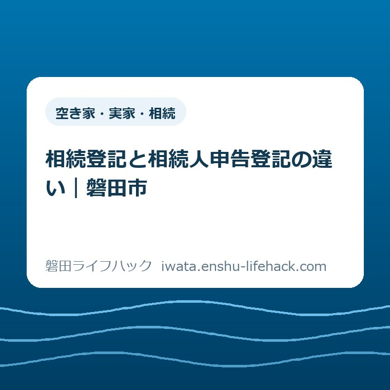

更新：2026.09.22 空き家・実家・相続
相続登記と相続人申告登記の違い｜磐田市

この記事の要点
Q. 遺産分割がまとまらないまま期限が来そうです。相続人申告登記で名義変更まで終わりますか？
A. いいえ。相続人申告登記は、申出人が相続人であることを法務局へ申し出て、相続登記の基本的な申請義務を果たす簡易な手続です。所有権移転や持分の確定はしません。2024年4月1日より前から取得を知っていた未登記不動産は、原則2027年3月31日まで。協議成立後は別途、相続登記が必要です。
結論——相続登記は権利を示し、相続人申告登記は期限へ対応する
相続登記と相続人申告登記の違いは、登記簿上の名義と権利を相続の結果に合わせるか、申出人が相続人であることだけを示して基本的な申請義務を果たすかです。相続人申告登記は、相続登記の簡易版でも、仮の名義変更でもありません。
磐田市に親名義の家がある。相続人は分かっているが、誰が取得するかは決まらない。売るか残すかでも意見が割れている。そんな家族にとって、先に迫るのは話し合いの結論ではなく登記の期限です。
2024年4月1日より前から相続による不動産取得を知っていた場合、未登記不動産の期限は原則2027年3月31日です。2026年9月8日時点では204日あります。204日は短すぎませんが、戸籍と不動産を洗い出し、家族で連絡を取る期間として余裕があるとも言い切れません。
遺産分割が間に合わないなら、相続人申告登記で基本的な義務へ対応する道があります。ただし、親名義の家を売れる状態にはなりません。協議成立後、不動産を取得した人は、その内容に沿った相続登記を別に申請します。
相続放棄、遺言、数次相続、行方不明の相続人がいる場合は必要な判断が変わります。相続全体の入口は磐田市の相続手続きで確認し、個別の登記は法務局または司法書士へ確認してください。

先に比較——二つの登記は、終わらせる仕事が違う
相続登記は相続で取得した所有権を公示する手続で、相続人申告登記は期限内に基本的な申請義務を果たすための簡易な申出です。二つは同じゴールへ向かう速い手続と遅い手続ではなく、役割の異なる手続です。
| 比べる項目 | 相続登記 | 相続人申告登記 |
|---|---|---|
| 主な目的 | 相続による所有者・持分を登記簿へ反映 | 基本的な申請義務を簡易に履行 |
| 遺産分割 | 遺言、遺産分割、法定相続分などに沿って申請 | 遺産分割が未成立でも申出可 |
| 登記される内容 | 所有者、持分、登記原因など | 申出人の氏名・住所など |
| 売却・担保設定 | 権利関係を整えて次の手続へ進める | できない。別途相続登記が必要 |
| 手続する人 | 不動産を取得した相続人など | 各相続人が単独で申出可 |
| 戸籍の範囲 | 相続人全体と持分の確認が必要になる場合がある | 申出人が相続人だと分かる資料が中心 |
| 登録免許税 | 原則として必要。免税の有無は個別確認 | かからない |
| 遺産分割成立後 | 成立内容を反映すれば最終の名義になり得る | 成立日から3年以内の相続登記を代替しない |
相続登記では、遺産分割協議書、戸籍、住民票、固定資産評価証明書など、原因と申請内容に応じた資料を整えます。申請が完了すれば、誰がどの持分を取得したかを登記簿から確認できる状態になります。
相続人申告登記では、登記名義人について相続が始まったことと、自分が相続人であることを申し出ます。法務省は、特定の相続人が単独で申し出られると案内しています。法定相続人全員の範囲や法定相続分を確定する資料は求められません。
相続人申告登記には登録免許税がかかりません。ただし、戸籍証明書や住所を示す書類を取得する費用までゼロになるとは限りません。「無料の相続登記」と説明すると、制度の役割も費用も誤解させます。
相続登記に必要な書類は、遺言の有無、遺産分割の内容、相続の重なり方で変わります。相続人申告登記も、申出人と亡くなった方の関係によって戸籍の範囲が変わります。表は選択の入口であり、個別の必要書類の確定表ではありません。
名義を変えたいなら相続登記です。話し合いが未成立で期限へ対応したいなら、相続人申告登記を検討します。この二行を混ぜないことが、最初の整理になります。
2027年3月31日期限は、誰にでも一律ではない
相続登記の基本的な期限は、相続人が相続の開始と、その不動産の所有権を自分が取得したことを知った日から3年以内です。制度の施行日は2024年4月1日で、施行前に始まった相続も対象に含まれます。
法務省「相続登記の申請義務化について」は、2024年4月1日より前から取得を知っていた未登記不動産について、2027年3月31日までと案内しています。古い相続だから対象外、という扱いではありません。
一方、相続自体は2024年4月1日より前でも、不動産を取得したと知った日が2024年4月1日以降なら、その日から3年以内です。「昔亡くなった親の家は全部2027年3月31日」と一律に決めると、この条件を落とします。
2026年9月8日から2027年3月31日までは204日です。相続人が兄弟姉妹だけとは限らず、先に相続人だった人が亡くなって次の世代へつながると、戸籍収集と連絡には時間がかかります。期限を家族会議の最終日にせず、申請を終える日として置いてください。
正当な理由なく義務に違反した場合は、10万円以下の過料の対象になる可能性があります。10万円が自動で請求されるわけでも、刑事上の罰金でもありません。登記官の催告などを経る仕組みなので、不安を煽る言い換えは避けます。
取得を知らなければ3年が始まらない場合はあります。ただし、「登記簿を見ていないから知らないことにする」という選び方はできません。いつ、どの資料で、誰が不動産取得を知ったかは家族ごとに違います。
期限を考える前に、対象不動産を漏らさない作業も要ります。磐田市の名寄帳は市内の課税資産、所有不動産記録証明書は全国の所有権登記を探す資料です。違いと併用順は所有不動産記録証明書と名寄帳の違い｜磐田市版に整理しました。
建物が未登記なら、所有権の相続登記とは別の確認が要ります。固定資産税の納税通知書に家屋が載っていても、法務局の登記簿に建物があるとは限りません。土地と建物を一組と思い込まず、それぞれの登記状態を確かめてください。
相続人申告登記で、できることと終わらないこと
相続人申告登記でできるのは、期限内に相続開始と自分が相続人であることを登記官へ申し出て、申出人について基本的な申請義務を履行した扱いを受けることです。相続した権利の帰属や持分を確定する手続ではありません。
法務省「相続人申告登記について」によると、申出後は登記官が申出人の氏名・住所などを登記簿へ付記します。亡くなった方から申出人へ所有権移転登記をするわけではありません。
相続人の1人が単独で申し出られる点は、遺産分割がまとまらない家族に効きます。ほかの相続人の押印を集め、全員分の戸籍をそろえて法定相続分を確定するところまで待たずに動けます。
意外な事実は、1人の申出が相続人全員へ及ぶわけではないことです。申請義務を履行した扱いになるのは、原則として申し出た人だけです。兄が申し出たから弟も妹も済んだ、と受け取らないでください。
全員分を同時に申し出るなら連名の申出ができます。相続人の1人がほかの人の代理人となり、全員分を申し出る方法もあります。その場合は委任状などが要るため、申出人の範囲を先に決めます。
一般的な必要資料は、申出書、亡くなった登記名義人と申出人の相続関係が分かる戸籍証明書、申出人の住所情報です。数次相続では、途中の相続関係と死亡が分かる戸籍も必要になります。
法務省は窓口、郵送のほか、ウェブブラウザを使う申出も案内しています。申出手続では押印や電子署名が不要とされていますが、添付資料を含む具体的な操作は公式案内で確かめてください。
相続人申告登記をしても、家は売れません。売買の前提として、買主へ所有権を移せる登記名義に整える必要があります。金融機関が抵当権を設定する場合も、相続登記を飛ばして進めるものではありません。
申出を終えても、誰が家を管理するかは決まりません。草木、雨漏り、郵便物、火災保険、近隣からの連絡は、登記の申出と別に動き続けます。遺産分割中の管理役と費用負担は、家族で紙に残してください。
遺産分割が成立したら、不動産を取得した相続人は成立日から3年以内に、その内容に沿った相続登記を申請します。先に相続人申告登記をしていても、この追加の義務を果たしたことにはなりません。
相続人申告登記は、期限を無かったことにする制度ではありません。基本的な義務へ対応しながら、遺産分割の結論を出す時間を分けて確保する制度です。

相続した家を建て替えて住む場合は、登記の期限とは別に、磐田市の実家建替え補助にある取得後1年と年度内完了の条件も確認してください。
良い点——家族の結論を急がせず、期限だけ先に扱える
相続人申告登記の良い点は、遺産分割が未成立でも、各相続人が基本的な申請義務へ先に対応できることです。家を誰が取るかという重い結論と、期限を守る作業を切り分けられます。
第一に、申出人と亡くなった方の相続関係を示す資料が中心です。相続登記を法定相続分で行う場合のように、相続人全員の範囲と持分を確定する資料を、申出の前提としてそろえる必要はありません。
第二に、特定の相続人が単独で動けます。連絡がつかない相続人がいる、家族の一部が判断を保留している、といった状況でも、自分の義務に限って期限へ対応する選択肢があります。
第三に、登録免許税がかかりません。戸籍などの取得費や専門家へ依頼する費用は別ですが、申出自体の登録免許税がないことは、家計の入口を軽くします。
第四に、遺産分割の結論を期限に合わせて無理に作らずに済みます。親名義の家を残すか、誰かが住むか、売るかは、介護、仕事、子どもの学校、修繕費まで含めて決める話です。
制度として筋が通っています。2027年3月31日だけを見て不本意な合意をするのではなく、基本義務への対応と家族の決断を二本に分けられるからです。
注文したい点——「登記」という名前だけでは、終わらない仕事が見えにくい
相続人申告登記への注文は、名称から名義変更まで終わるように見えやすいことです。登記簿へ氏名と住所が付記されても、所有権と持分を示す相続登記ではありません。
「簡易な手続」という案内も、何が簡易なのかまで読まないと危険です。簡易なのは基本義務を履行するための申出であり、相続関係そのものが簡単になるわけではありません。
特に気になるのは、相続人の1人が申し出れば家族全員が済むという誤解です。申出人だけに効くことを、申出前の家族一覧へ書き込める説明が必要です。
登録免許税がかからないことも、「全部無料」へ置き換えないでください。戸籍を集める費用、郵送費、相談を依頼する場合の費用は残ります。家族の交通費と時間も消えません。
もう一つ、申出後の予定を同じ紙に書く欄が欲しいところです。遺産分割をいつ話すか、管理費を誰が払うか、成立後の相続登記を誰が依頼するか。申出の受付だけでは家の段取りは完了しません。
私は制度を否定しているのではありません。良い仕組みだからこそ、「期限対応」と「名義変更」の境目を、市民が一読で間違えない言葉にしてほしいと考えます。
磐田市への届出は、第3の別手続
磐田市の相続人代表者届兼現所有者申告書は、固定資産税の通知を受け取る相続人の代表者などを市へ届ける手続です。相続登記でも相続人申告登記でもなく、提出先も役割も違います。
磐田市「相続人代表者（変更）届出書 兼 現所有者（変更）申告書」は、所有者の死亡からおおむね2か月後、死亡届出人または相続人へ書類を送ると案内しています。提出先は磐田市役所本庁1階の資産税課です。
市の書類は、相続登記が終わるまで納税通知書などを誰が受け取るかを決める役割を持ちます。固定資産税の通知を止めない点は良いのですが、その代表者が不動産を単独で相続する意味にはなりません。
磐田市も、届出書兼申告書は実際の相続や遺産分割とは関係せず、土地・家屋の名義変更には法務局で別途相続登記が必要だと明記しています。市へ返送した封筒と、法務局へ出す書類を同じ完了箱へ入れないでください。
磐田市内の登記済み土地・建物は、静岡地方法務局磐田出張所が不動産登記を管轄します。所在地は磐田市見付3599番地の6、磐田地方合同庁舎2階です。2026年9月8日に公式案内で窓口時間9時から17時までを確認しました。
未登記家屋は別です。磐田市「固定資産税に関する届出」は、法務局に登記されていない家屋を相続で移す場合、資産税課へ未登記家屋異動届出書を出すよう案内しています。
登記済みか未登記かで、入口が法務局と市に分かれます。相続後の税の届出は相続後の固定資産税の手続きにも整理しています。納税通知書に載ることと登記済みであることは分けて確認してください。
磐田市は、市内在住の当事者を対象に司法書士との相続・登記相談も案内しています。2026年9月8日の確認では毎月第1・第3火曜日、1組25分以内、予約制です。相談日や対象は変わり得るため、磐田市の相続・登記相談で予約前に確認してください。
大石の視点——相続人申告登記を「とりあえずの名義変更」と呼ばない
大石浩之（磐田市／不動産業）は、相続人申告登記を家族の結論を先送りする道具ではなく、結論を急いで壊さないために期限対応を分ける道具だと考えます。
ここは体験ストックに基づく実話ではなく、制度を不動産の段取りへ置き直した私の意見です。相続人申告登記を「とりあえずの名義変更」と呼んではいけません。これは結論の代用品ではなく、遺産分割を急いで壊さずに期限へ対応する退避路です。
家を誰が取るか決められないことには、理由があります。親の介護を多く担った人がいる。遠方で維持できない人がいる。住み続けたい人と現金化したい人がいる。期限だけで、その違いは消えません。
私は、2027年3月31日を理由に家族へ即断を迫る案内には賛成しません。期限は守る。その一方で、売る、残す、住むという判断には材料をそろえる。この二つを同時に成立させるのが相続人申告登記の使いどころです。
正直に言えば、私はこの手続をどこまで勧めるべきか迷います。申出が済んだ安心で、その後の遺産分割と相続登記が止まるなら、家の管理だけが何年も残るからです。
だから、申出の日と同時に次の確認日を決めます。申出から3か月後に家族へ連絡する。草木の手入れと火災保険の担当を決める。動かない家にも、季節と請求書は来ます。
遺産分割中も、家の傷みは待ちません。親名義の家が空いているなら、相続した家の管理と実家じまいを登記の話と別の担当表にしてください。
対案・結論——2026年9月8日にする一歩は、家を1件書き出すこと
遺産分割がまとまらない家族が2026年9月8日にできる一歩は、親名義と思っている土地・建物を1件だけ紙へ書き出すことです。所在地、登記名義人、死亡日、取得を知った日、協議状況の五つを並べます。
第一に、登記事項証明書で名義人を確認します。納税通知書の宛名だけで決めません。土地と建物の両方があるか、建物が未登記ではないかも分けます。
第二に、相続人ごとに期限を確認します。2024年4月1日より前から取得を知っていた未登記不動産なら、原則2027年3月31日です。後から知った人は、その日から3年以内になる場合があります。
第三に、期限までに遺言や遺産分割の内容で相続登記できるかを見ます。難しければ、相続人申告登記を誰の分について申し出るかを法務局へ相談します。
第四に、磐田市から届く相続人代表者届兼現所有者申告書は別に返します。法務局の申出を待つ書類ではありません。未登記家屋があれば、市への異動届も確認します。
第五に、相続人申告登記の申出日だけでなく、遺産分割を見直す日も書きます。協議成立後は、不動産を取得した人が成立日から3年以内に相続登記を申請します。
将来、相続した空き家を売るなら、相続登記の後にも確認があります。譲渡時の特例と市の確認書は磐田市の空き家3,000万円控除｜確認書は2週間で、売却を決める前に条件を確認してください。
結論は一つです。遺産分割を無理にまとめなくても、登記の期限を放置する必要はありません。相続人申告登記で対応できる基本義務と、後に残る相続登記を二段階で管理してください。
制度の適用、期限、必要資料は個別条件で変わります。最終判断は法務省、静岡地方法務局磐田出張所、司法書士、磐田市の公式ページで確認してください。
FAQ——相続登記と相続人申告登記で迷う3問
相続登記と相続人申告登記について、磐田市に親名義の家がある相続人が確認したい3問を、手続の役割に絞って答えます。
相続人申告登記をすれば、親名義の家を売却できますか。
できません。相続人申告登記は、申出人が相続人であることを示して基本的な申請義務を果たす手続で、所有権や持分を公示しません。売却や抵当権設定をするには、遺産分割などの内容に沿った相続登記が別に必要です。
相続人の1人が申し出れば、ほかの相続人も期限に対応したことになりますか。
1人で申し出ることはできますが、履行した扱いになるのは原則として申出人だけです。ほかの相続人の分も期限へ対応するなら、各自が申し出るか、連名または代理で全員分を申し出ます。個別事情は法務局へ確認してください。
磐田市へ相続人代表者の届出をすれば、法務局の手続も済みますか。
済みません。磐田市の相続人代表者届兼現所有者申告書は、固定資産税の通知を受け取る人などを市へ届ける手続です。土地・建物の名義変更や相続人申告登記は、別に静岡地方法務局磐田出張所へ申し出ます。
相続人申告登記は、決められない家族を罰するための仕組みではなく、結論と期限を分ける仕組みです。ただし名義は変わりません。申出で安心して止まらず、家の管理日と遺産分割後の相続登記まで同じ予定表に置いてください。
実家管理の負担や家族の意見を専門家へ伝える準備には、磐田市の空き家相談会で使う家族の相談メモも活用できます。売却の結論を急がず、困りごとと未確認事項を分けて持参する方法を紹介しています。
参考にした公式情報
- 相続人代表者（変更）届出書 兼 現所有者（変更）申告書／磐田市（2026年9月8日確認・ページ更新日2025年3月4日）
- 固定資産税に関する届出／磐田市（2026年9月8日確認・ページ更新日2026年5月29日）
- 相続・登記相談（予約制）／磐田市（2026年9月8日確認・ページ更新日2025年10月2日）
- 相続登記の申請義務化について／法務省（2026年9月8日確認・ページ更新日2026年4月1日）
- 相続人申告登記について／法務省（2026年9月8日確認・ページ更新日2026年3月24日）
- 相続登記の申請義務化に関するQ＆A／法務省（2026年9月8日確認・ページ更新日2025年3月27日）
- 静岡地方法務局 磐田出張所（2026年9月8日確認）

最終確認日：2026-09-08 ／ 本記事は公表情報と執筆者の見解を分けて記載しています。制度の対象、期限、取得を知った日の扱い、申出人、必要書類、遺産分割後の義務、登録免許税、未登記家屋、市への届出は個別条件で変わります。最新情報は法務省、静岡地方法務局磐田出張所、司法書士、磐田市公式ページでご確認ください。